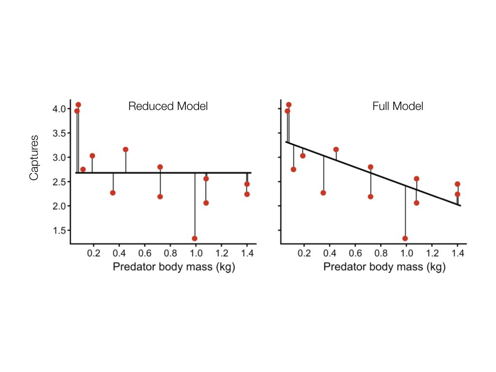

9 Correlation and Simple Linear Regression
9.1 Background
Quite frequently we want to know whether two continuous variables are related based on measuring them in the same set of observations, and if so, how and how strongly they are related. When two random variables (say X and Y) deviate from their respective means in a systematic, predictable way, we say that they covary, or that they are correlated variables. Levels of expression for pairs of genes, for example, are often correlated, especially if the genes are members of the same regulatory network. Two genes may share the same transcription factor, for instance, and when the abundance of that transcription factor increases in cells, so do transcript levels for the two genes. In this case if you measure abundance of both transcripts in a sample of cells, tissues, individuals, or whatever, you may well find many observations with low expression values for both genes, many with moderate expression values for both, and many with high values for both genes. Cleary in this situation there appears to be a “positive” relationship bewteen the two gene expression variables, but as statisticians how do we formally describe the relationship better, and how might we make inferences about the system from a sample? This chapter focuses on the estimation of parameters, and the testing of hypotheses, relevant to relationships between quantitative variables.
9.2 Covariance and correlation
Before we get into the parameters of interest and how we estimate them from samples, we should first make some practical considerations. Two variables may covary for a number of reasons, which may or may not involve one variable systematically influencing the other. We would call that a “causal” relationship, but covariance can arise for non-causal reasons too, such as in the example above. In that example the expression level of “gene A” was not influenced by the expression of “gene B,” but the two covaried simply because they were affected in similar ways by a third force (the transcription factor). This can be an important distinction (between causal and non-causal relationships) when thinking about how to proceed with analysis because for some statistics (like covariance and correlation) causality is not assumed or interpreted, but for other approaches (like regression) it might be. In the case of regression, which we will return to later in this chapter, there is a clear dependent (response) and independent (explanatory) variable. Regression models, especially in the case of controlled experiments in which the values of the explanatory variable are set and assigned by the experimentors, the goal is often to understand whether, and if so by what magnitude, that variable directly influences the response variable in order to test hypothesis and/or make predictions about the system.
9.2.1 Covariance
We stated above that “systematic deviation from respective means” defines a situation in which two variables covary, but how do we actually convey this numerically? One statistic, known as the covariance, multiplies each y and x deviation (for a given observation) from its respective mean, sums that product across all observations, and divides by the total number of observations to yield an average. If individual values of one variable deviate from their mean in one direction, and corresponding values of the other variable consistently deviate from their mean in the same (or the opposite) direction, the products in the sum will be either consistently positive or consistently negative, resulting in a substantial positive covariance, or a substantial negative covariance, respectively. If there is no consistent, directional deviation for the two variables, on the other hand, the products will sum to a covariance of zero (no relationship between variables).
The population covariance can be expressed as: \[cov(X,Y)=\sigma_{XY}=\frac{\sum_{i=1}^N (x_i-\mu_x)(y_i-\mu_y)}{N}\]
Where \(x_i\) and \(y_i\) correspond to the values of random variables X and Y for the ith observation in a populaiton of size N, and \(\mu_x\) and \(\mu_y\) are the respective population means. Again, the important takeaway is that when the product of \((x_i-\mu_x)\) and \((y_i-\mu_y)\) is consistently positive or negative across observations, the x and y variables are consistently deviating from their means in a similar or opposite manner, resulting in a positive or negative covariance.
To estimate covariance from a sample, we divide by the degrees of freedom (n - 1) instead of dividing by n: \[cov(x,y)=s_{xy}=\frac{\sum_{i=1}^n (x_i-\bar{x})(y_i-\bar{y})}{n-1}\]
9.2.2 Correlation
Remember when we noted (in Chapter 9) that variables with larger values on average tend to have larger variances as well (the “positive mean-variance relationship”)? This dependence of variance magnitude on variable “scale” similarly applies to covariance. That is, if one or more variables that covary have relatively large values, it will be reflected in the magnitude of the covariance. For this reason, and much in the same way we use the coefficient of variation (CV) to adjust for scale when comparing standard deviations, we often use a standardized covariance called the correlation coefficient that is obtained by dividing the covariance by the standard deviations of x and y. The correlation coefficient, therefore, ranges from -1 to 1. Values of -1 and 1 indicate perfect linear relationships, and a value of 0 indicates uncorrelated variables. The correlation coefficient (sometimes called the Pearson correlation coefficient) for a population is: \[\rho_{XY}=\frac{cov(X,Y)}{\sigma_X\sigma_Y} \]
Where \(cov(X,Y)\) is the population covariance between variables X and Y, and \(\sigma_X\) and \(\sigma_Y\) are the population standard deviations for X and Y.
For a sample, the Pearson correlation coefficient can be calculated as: \[r_{xy}=\frac{\sum_{i=1}^n (x_i-\bar{x})(y_i-\bar{y})}{\sqrt{\sum_{i=1}^n (x_i-\bar{x})^2}\sqrt{\sum_{i=1}^n (y_i-\bar{y})^2}}\]
Where \(\bar{x}\) and \(\bar{y}\) are the sample means for variables x and y, and n is the sample size.
The following scatter plots show a range of scenarios for two variables x and y, depicting various relationship types and corresponding covariance and correlation values.
In plots A and B we see a positive covariance and correlation. In B the covariance is large because the scale of x is 10 times larger than in A, but the correlation coefficient is the same. In C we see a negative relationship between x and y (y decreases as x increases), and with covariance and correlation of greater magnitude than in A, owing to a “tighter” relationship. In plot D values for the variables x and y were both drawn randomly and independently, so there is no significant correlation or covariance.
9.2.3 Hypothesis tests for correlation
Formal hypothesis tests about correlation concern whether or not the population correlation coefficient (\(\rho\)) differs from zero. The null and alternative hypothesis statements are as follows
\[H_0 : \rho_1 = 0\]
\[H_A: \rho_1 \neq 0\]
The null hypothesis can be tested by calculating a t statistic, which is the sample correlation coefficient (r) standardized by its standard error. Below is one way to calculate t: \[t=r\sqrt{\frac{n-2}{1-r^2}}\]
Where n is the sample size and r is the sample correlation coefficient. This t statistic can then be compared to a t distribution with n-2 degrees of freedom. In R the function cor.test() can be used for this parametric test, but keep in mind that the following assumptions apply:
The relationship being tested under the alternative hypothesis is assumed to be linear (as opposed to strongly curvilinear), as the Pearson correlation coefficient won’t characterize non-linear relationships adequately.
The “joint probability distribution” of the two variables in the population (and therefore the sample) is assumed to be bivariate normal. For this to be true, both x and y variables should be approximately normally distributed in the sample.
There are non-parametric alternatives to test the above null hypothesis that \(\rho\) = 0 when either of these assumptions is not met. Rank-based approaches calculate a test statistc based on the ranks of x and y values, so they are appropriate as long as the association between the variables is monotonic (consistently increasing or decreasing) in nature. The Spearman’s rank correlation test is best suited for small sample sizes (e.g. n < 30), and the Kendall’s tau (\(\tau\)) test is more appropriate for larger sample sizes. These tests can also be performed in R using the cor.test() function, by supplying either “pearson” or “kendall” to the method argument. Yeta another nonparametric option would be to peform a randomization or bootstrap test for \(\rho\) = 0, by either shuffling or resampling x and y values independently to generate a null distribution for the sample correlation coefficient r.
You may have noticed that correlation analysis can tell us whether, in what direction, and how “tightly” two variables are correlated, but it is agnostic with respect to other properties of the relationship, namely the steepness of the relationship (i.e. the rate at which y decreases (or increases) with an increase in x). This parameter, which is extremely important to understand in a variety of practical contexts, is inferred using linear regression.
9.3 Simple linear regression
We can also model linear relationships between variables using linear equations, with which you are probably quite familiar. Linear regression, as we refer to this approach in statistics, has been around since the 19th Century, when the biometrician Francis Galton developed it to understand phenotypic similarity between human parents and their offspring. One of the traits Galton studied extensively, for example, was adult height. Linear regression models describe how the magnitude of a response variable y changes as a function of a predictor variable x, based on the generic equation \(y=bx+a\). In this equation b (the slope) gives the amount of change that occurs in y per unit of x, and a is the “y-intercept” (the value of y when x = 0). Not surprisingly, b > 0 indicates a positive relationship between x and y, b < 0 indicates a negative relationship, and when b = 0 there is no linear relationship between x and y
If we consider X and Y as random variables in a population, from an estimation standpoint we may naturally be interested in estimating the population slope \(\beta_1\). The population y-intercept \(\beta_0\) is also a parameter in the linear regression model, but it is usually of little interest inference-wise. Under our usual sampling-based inference framework we can represent a simple linear regression model as: \[y_i=\beta_0+\beta_1x_i+\varepsilon_i\] Where our sample includes y and x values across i observations, and with the aforementioned designations for population slope and intercept. Importantly, because we rarely expect a perfect, straight-line relationship between X and Y, we include an “error” (or “residual”) term \(\varepsilon_i\) in the model. This term absorbs any “noise” (i.e. random error unexplained by the effect of X), and can be quantified by departures of y values from the straight line dictated by the model. We will return to these departures, also called “residuals” repeatedly in this chapter and the next. You may be asking how we estimate \(\beta_1\) and \(\beta_0\) from a sample. Similar to using a formula to calculate a sample mean, a sample correlation coefficient, etc., we can calculate a sample slope (\(b_1\)) and intercept (\(b_0\)) using one of several “best fit” equations. One of these, known as ordinary least squares (OLS), or “model I regression,” derives a linear equation for a straight line such that the vertical distances between y-values in the sample and points on the line (the “predicted” y-values) are minimized. Effectively, the goal with this approach is to minimize the variation in y unexplained by x. The slope and intercept of this “best fit line” are (\(b_1\)) and (\(b_0\)), our estimates for \(\beta_1\) and \(\beta_0\).
9.3.1 Hypothesis tests in linear regression
The first hypothesis testing approach for linear regression involves the individual parameters (\(\beta_1\) and \(\beta_0\)) themselves. We can state a null hypothesis for the slope and intercept: \[H_0: \beta_1=0\]
\[H_0: \beta_0=0\]
Alternative hypotheses are, of course, that these parameters are not equal to zero. As discussed, a nonzero population slope indicates a relationship between X and Y, and the slope’s magnitude indicates the rate at which Y changes with X. A nonzero y-intercept indicates the “background” level for Y in the absence of X but, as stated, is usually not of too much interest. Both the sample slope and sample intercept can be used to calculate respective t statistics (\(t=\frac{b}{s_b}\)), where the denominator is the usual standard error of the point estimate, and t can be compared to a t distribution with n - 2 degrees of freedom.
A more generalized framework for testing linear regression hypotheses involves considering the amount of variation explained by the full linear model (\(y_i=\beta_0+\beta_1x_i+\varepsilon_i\)) relative to the amount of variation it does not explain. If the amount of variation in y explained by the full model is significantly greater than the amount unexplained, we should reject our null hypothesis of a zero slope. In practice, though, we can only directly measure unexplained variation, so we calculate the difference between the unexplained variation in the reduced model, in which the slope is set to zero (\(y_i=\beta_0+\varepsilon_i\)), and the unexplained variation in the full model above. If this difference is large, it means that the full model explains a lot of variation in y, and, as said, we should reject our null hypothesis.
You may be wondering how we quantify the variation unexplained in full and reduced linear models. This brings us back to the concept of residuals. By calculating the sum of squared deviations of observed y values from y values predicted under a given model (which we call \(\hat{y}\)s), we can measure unexplained variation. These measures are referred to “sums of squares” (SS). Based on what was stated above, the expression \(\frac{SS_{reduced}-SS_{full}}{SS_{full}}\) gives us the ratio we need to test the null hypothesis. The following example illustrates how SSs work for reduced and full models.

In this example, there appears to be a negative relationship between body mass and captures. The reduced model, with a slope of zero, is not as good a fit, so the SS (reflected in the vertical lines characterizing residuals) is greater than in the full model.
Under the assumptions below, the ratio of explained to unexplained variation (called an F-ratio) can be compared to the F distribution for the null hypothesis test. Extremely large values of F are unlikely to be observed due to random chance under the null hypothesis, so if the F-ratio is large enough, we reject the null hypothesis.
A linear relationship between the variables under the alternative hypothesis is assumed. Non-linear relationships (such as curvilinear ones) are not modeled adequately by this framework and need to be analyzed differently. This assumption can be checked with a scatter plot.
Both variables are assumed to be normally distributed, so samples should also reflect normality, and can be checked in the usual ways (boxplots, histograms, etc.).
Variance of the response variable (i.e. y) is assumed to be homogeneous across all values of the explantatory variable (i.e. x). In regression, this assumption is evaluted in the context of the fitted line. The residuals should form a uniform “band” of points when plotted against predicted values of y. A “residual plot” will address this assumption. Below is an example of what to look for in that plot type.

In the plots above, (a) shows the expected residual pattern under our assumptions, while (b), (c), and (d) show patterns of unequal or systematically changing variance, all violations of linear regression assumptions. The section below describes how to view a residual plot in R.
9.3.2 Linear regression in R
Fitting a regression model in R is very simple. We use the function lm() to specify the structure of the model. The lm() function can actually be used to fit an entire class of models we call “general linear models.” We will return to this idea in the next chapter, when we discuss categorical predictors and ANOVA. For now, know that you can fit a simple regression model with lm() using the simple ~ syntax. The response (y) variable goes to the left of the ~, and the predictor variable to the right. Below is an example of how to fit a regression model for the toy data set (panel A) used to demonstrate covariance and correlation above.
## First, plot the relationship with a scatter plot
plot(x_1, y_1, cex=0.7, pch=19, ylab="y", xlab="x")
## Define the model using the lm() function and assign it to the object "reg_mod_1"
reg_mod_1 <- lm(y_1 ~ x_1)
## We can make a residual plot to help evaluate assumptions
plot(reg_mod_1$fitted.values, reg_mod_1$residuals, xlab="predicted y", ylab="residuals")
As you can see in the residuals plot, our assumption of equal variance looks to be met. There is no clear structure in the relationship between fitted values and residuals. Now lets look at model details.
## We can use the summary() function to look at parameter estimates and hypothesis tests
summary(reg_mod_1)
Call:
lm(formula = y_1 ~ x_1)
Residuals:
Min 1Q Median 3Q Max
-3.0042 -0.8783 -0.2644 1.1652 2.2413
Coefficients:
Estimate Std. Error t value Pr(>|t|)
(Intercept) 1.02754 0.52547 1.955 0.0577 .
x_1 0.79920 0.07803 10.243 1.29e-12 ***
---
Signif. codes: 0 '***' 0.001 '**' 0.01 '*' 0.05 '.' 0.1 ' ' 1
Residual standard error: 1.437 on 39 degrees of freedom
Multiple R-squared: 0.729, Adjusted R-squared: 0.7221
F-statistic: 104.9 on 1 and 39 DF, p-value: 1.292e-12How do we interpret all of this output? The most important details begin with your Coefficients. Here we can see values associated with our (Intercept), corresponding to \(\beta_0\) in the standard linear model, and the slope associated with our predictor(s), in this case x_1, corresponding to \(\beta_1\). The four values associated with each term are the actual estimate for that coefficient, the standard error of that estimate, its associated test statistic (a t-value for linear regression), and finally the p-value. Note that the last two values are derived under the null assumption that the intercept \(\beta_0\) and the slope \(\beta_1\) are equal to 0. Based on the test statistics associated with x_1, and that our data seems to meet our assumptions of the test, we should reject the null hypothesis of no linear relationship with high confidence.
9.3.3 A note on the coefficient of determination
There is a clear connection between regression and correlation if we consider the sources of unexplained variation in a regression model. As it turns out \(1-\frac{SS_{full}}{SS_{reduced}}\) quantifies the proportion of variance in y that is explained by x. This quantity is also called \(r^2\), the “coefficient of determination,” and, for simple linear regression, is the square of the correlation coefficient \(r\). \(r^2\)s (sometimes called “R-squared values”) are commonly reported in regression analysis results.
9.3.4 A note on model II regression
As stated, OLS regression assumes that we don’t have any error associated with our explanatory variable (x) values. While this certainly can be the case for experiments in which we set those values or establish them with great precision, at least, in many cases (especially in observational or descriptive studies) we have as much measurement error for the x variable as we do for the y variable. In these cases, that uncertainty of measurement for x needs to be accounted for when fitting regression models. We use models classified as “model II” for these cases. Going into details about them is beyond the scope of this course, but you should at least know that they exist. The figure below depicts how residuals are calculated for three different versions of model II regression.

Major Axis (MA) regression should be used when x and y have the same error, and they have the same units or are dimensionless.
Ranged Major Axis (ranged MA) regresion should be used when there is error in both x and y, but if they are on different scales or have different units. This approach should not be used when there are outliers (observations with large residuals).
Reduced Major Axis (RMA or SMA) regression should be used when there is error in both x and y, but if they are on different scales or have different units. This method is robust to outliers and used when the two variables are strongly correlated.
9.4 Additional learning resources:
Irizarry, R. A. Introduction to Data Science. https://rafalab.github.io/dsbook/ - A gitbook written by a statistician, with great introductions to key topics in statistical inference.
Logan, M. 2010. Biostatistical Design and Analysis Using R. - A great intro to R for statistical analysis